Page index
- Page 1 — Index card (file #1757)
- Page 2 — Muster-out roll, Aug 1865
- Page 3 — Muster Sept & Oct 1864
- Page 4 — Muster July & Aug 1865
- Page 5 — Muster May & June 1865
- Page 6 — Muster Mch & Apr 1865
- Page 7 — Muster Jan & Feb 1865
- Page 8 — Muster July & Aug 1864
- Page 9 — Muster Sept & Oct 1864 (dup.)
- Page 10 — Muster May & June 1864
- Page 11 — Muster Mch & Apr 1864
- Page 12 — Muster Jan & Feb 1864
- Page 13 — Muster Nov & Dec 1863 (promotion)
- Page 14 — Muster May & June 1864 (dup.)
- Page 15 — Muster Sept & Oct 1863 (re-org)
- Page 16 — Muster July & Aug 1863
- Page 17 — Muster May & June 1863
- Page 18 — Muster Mch & Apr 1863
- Page 19 — Special Muster, 10 Apr 1863 (smallpox hosp.)
- Page 20 — Muster Jan & Feb 1863 (smallpox hosp.)
- Page 21 — Muster Nov & Dec 1862 (enlistment)
- Page 22 — Enclosures card
- Page 23 — Manuscript fragment
- Page 24 — Special Order No. 92, 12 June 1865
- Page 25 — Fold3 source-information cover
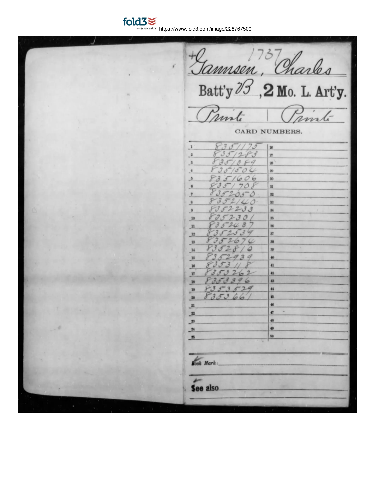
Page 1 — File Index Card INDEX
- Soldier
- Gannsen, Charles
- Unit
- Batt'y B, 2 Mo. L. Art'y. (2nd Regiment Missouri Light Artillery, Battery B)
- Rank
- Pvt. (Private)
- File number
- 1757 (handwritten in upper right)
- Card numbers (right column)
- List of ~18 NARA card-control numbers in the 525,000s — the index strings together every individual carded record (pages 2–21) into one packet. Numbers visible include 525135, 525208, 525244, 525285, 525382, 525702, 525540, 525233, 525234 and others (handwritten, several illegible).
- Bookmark
- (blank)
- See also
- (blank)
This is the cover/finder card the NARA compilation clerk created so all of Charles's individual carded records could be retrieved as one bundle.
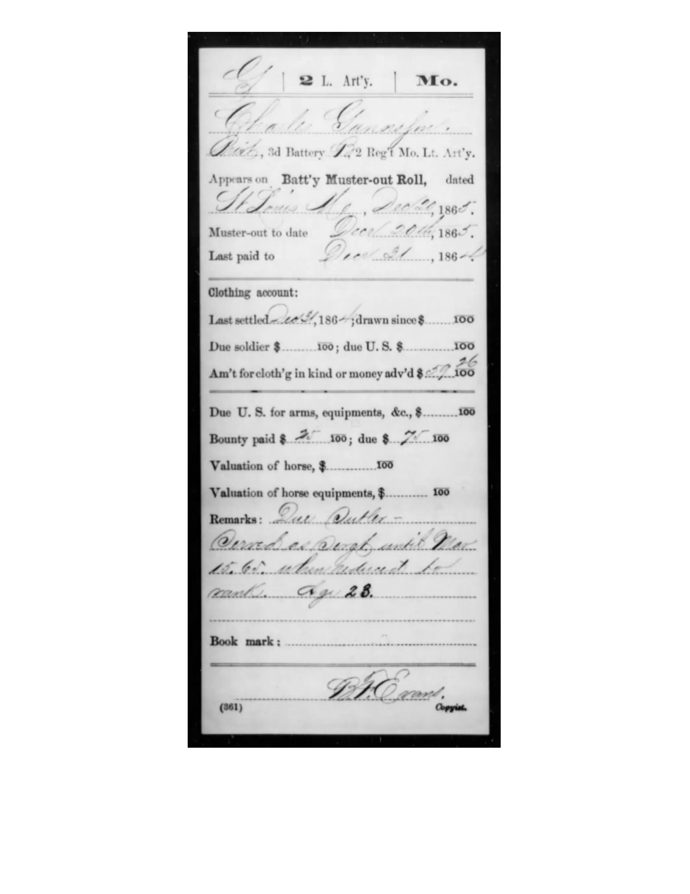
Page 2 — Muster-out Roll MUSTER
- Soldier
- Charles Gannsen
- Rank / Unit
- Pvt., 3d Battery B, 2 Reg't Mo. Lt. Art'y.
- Roll dated
- St. Louis, Mo., August 28, 1865
- Muster-out to date
- August 20, 1865
- Last paid to
- December 31, 186[4]
- Clothing acct. last settled
- December 31, 186[4]; drawn since $[illeg.]
- Due soldier / Due U.S.
- $[illeg.] / $[illeg.]
- Am't for cloth'g in kind or money adv'd
- $26.[illeg.]
- Due U.S. for arms, equipments &c.
- $[illeg.]
- Bounty paid / due
- $2 paid / $7 due
- Valuation of horse / horse equipments
- $[illeg.] / $[illeg.]
- Remarks
- "Due Soldier — Sergeant of Reg', enl'd Nov 11, '63 [when] reduced to rank … [per] Gen. Order 28."
- Copyist signature
- P. F. [Eames? / Cames?]
This is the final muster-out card — the chronologically last event in the packet despite being filed near the front. Two reading notes. (1) This roll is dated late August 1865 and its "muster-out to date" field reads August 20, 1865, but the project's canonical discharge date is 20 December 1865 — the date carried by the later separation action (Special Order No. 92, Nov 1865) and read as "to date Dec. 20, 1865" on the cleaner NARA scan (an earlier Fold3 reading had this field as Dec. 7). Charles's return to St. Louis and his 7 January 1866 marriage are consistent with a December 1865 separation. (2) The "enl'd Nov 11, '63" in the Remarks line is part of the rank / Gen.-Order-28 pay entry on this card; Charles's promotion to Sergeant is dated 7 November 1863 on the dedicated promotion card (Page 8). See the service timeline.
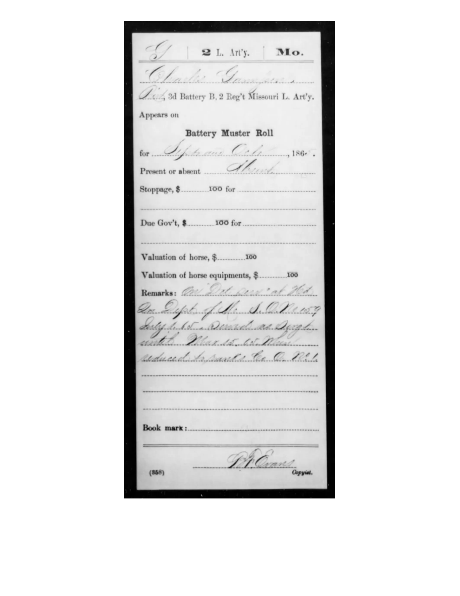
Page 3 — Battery Muster Roll, Sept & Oct 1864 MUSTER
- Soldier
- Charles Gannsen
- Rank / Unit
- Pvt., 3d Battery B, 2 Reg't Missouri L. Art'y.
- Period
- September & October, 1864
- Present or absent
- Absent
- Stoppage / Due Gov't / Valuation
- $[illeg.] / $[illeg.] / $[illeg.]
- Remarks
- "On Det[ached] service at Dept. of the Mo., St. Louis, Mo., by order of Maj. Gen. [Curtis]. [Reduced to ranks of Pvt., G[en.] O[rder] 28]."
- Copyist signature
- P. S. Eames (or similar)
Page 4 — Battery Muster Roll, July & Aug 1865 MUSTER
- Soldier
- Charles Gannsen
- Rank / Unit
- Pvt., 3d Battery B, 2 Reg't Missouri L. Art'y.
- Period
- July & August, 1865
- Present or absent
- Absent
- Remarks
- "On det[ached] serv at Depot Co., St. Louis, Mo. A. D. Mo. — No. 159. July 6, '65 transferred on Sept. until Master to be when reduced to Ranks Gen. O. 28."
- Copyist signature
- P. F. [Eames? / Cames?]
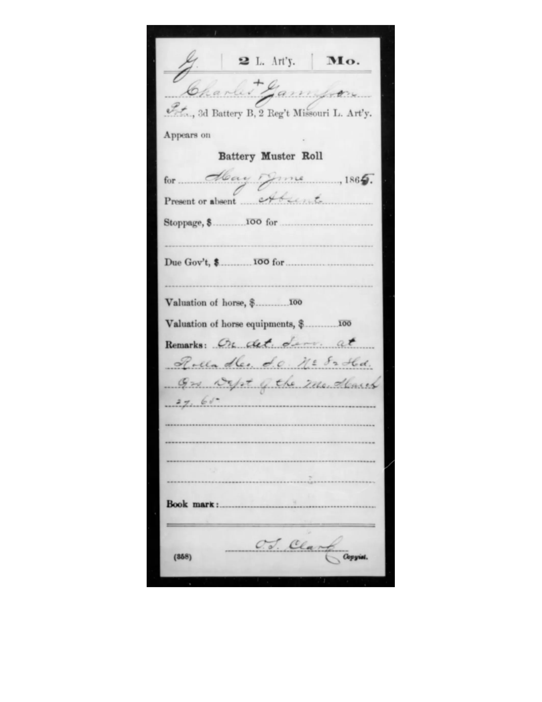
Page 5 — Battery Muster Roll, May & June 1865 MUSTER
- Soldier
- Charles Gannsen
- Period
- May & June, 1865
- Present or absent
- Absent
- Remarks
- "On det. serv. at H[d.] Q[rs.] Mr. R. He B [Reg't] of the M[o.] M[ar.] 22, '65" (reading uncertain — appears to be a Headquarters detail starting March 22, 1865)
- Copyist signature
- P. S. Clark
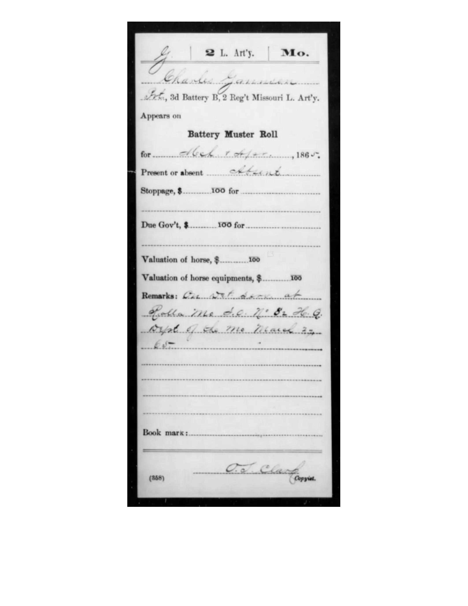
Page 6 — Battery Muster Roll, Mch & Apr 1865 MUSTER
- Soldier
- Charles Gannsen
- Period
- March & April, 1865
- Present or absent
- Absent
- Remarks
- "On det. serv at H[d. Q.] Mr. R. He B. Reg't of M.[o.] [Mar.] 22, '65"
- Copyist signature
- P. S. Clark
Page 7 — Battery Muster Roll, Jan & Feb 1865 MUSTER
- Soldier
- Charles Gannsen
- Period
- January & February, 1865
- Present or absent
- Present
- Due Gov't
- $3.[?] for $[illeg.]
- Remarks
- "Out det. for Order [No.] 95 —"
- Footnote / margin
- "* Roll term[s]"
- Copyist signature
- P. S. Clark
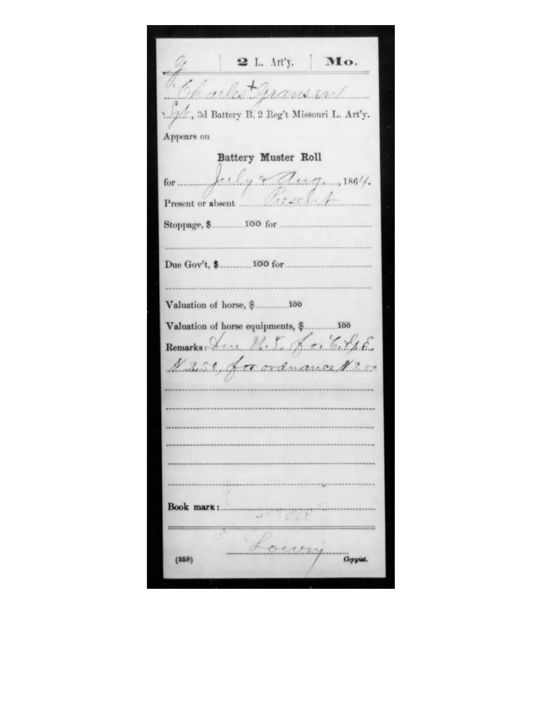
Page 8 — Battery Muster Roll, July & Aug 1864 MUSTER
- Soldier
- Charles Gannsen
- Period
- July & August, 1864
- Present or absent
- [Present]
- Remarks
- "Same MS [muster?] for End B. Due $[illeg.] for ordnance &c."
- Bookmark
- "J. Will" (?)
- Copyist signature
- Lacery (or similar)
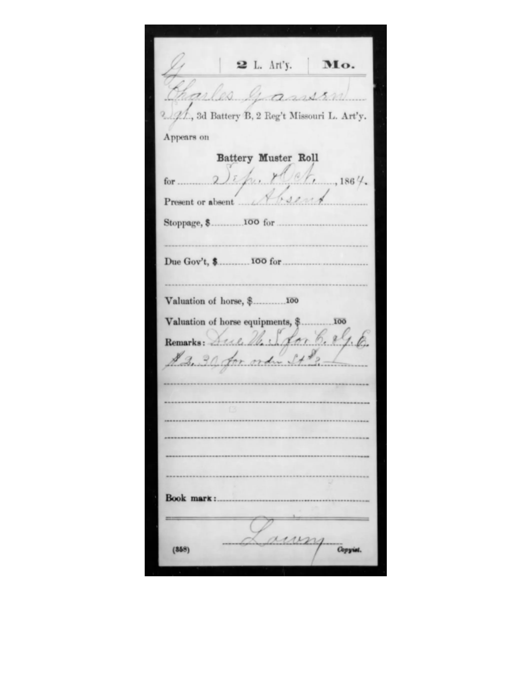
Page 9 — Battery Muster Roll, Sept & Oct 1864 (duplicate / parallel record) MUSTER
- Soldier
- Charles Gannsen
- Period
- September & October, 1864
- Present or absent
- Absent
- Remarks
- "Sub. Mo. R for Mo Sgt B Pl 30 for ordn[ance] [illeg.]"
- Copyist signature
- Lacery
Likely a parallel record from a separate muster-roll source covering the same Sept–Oct 1864 period as page 3.
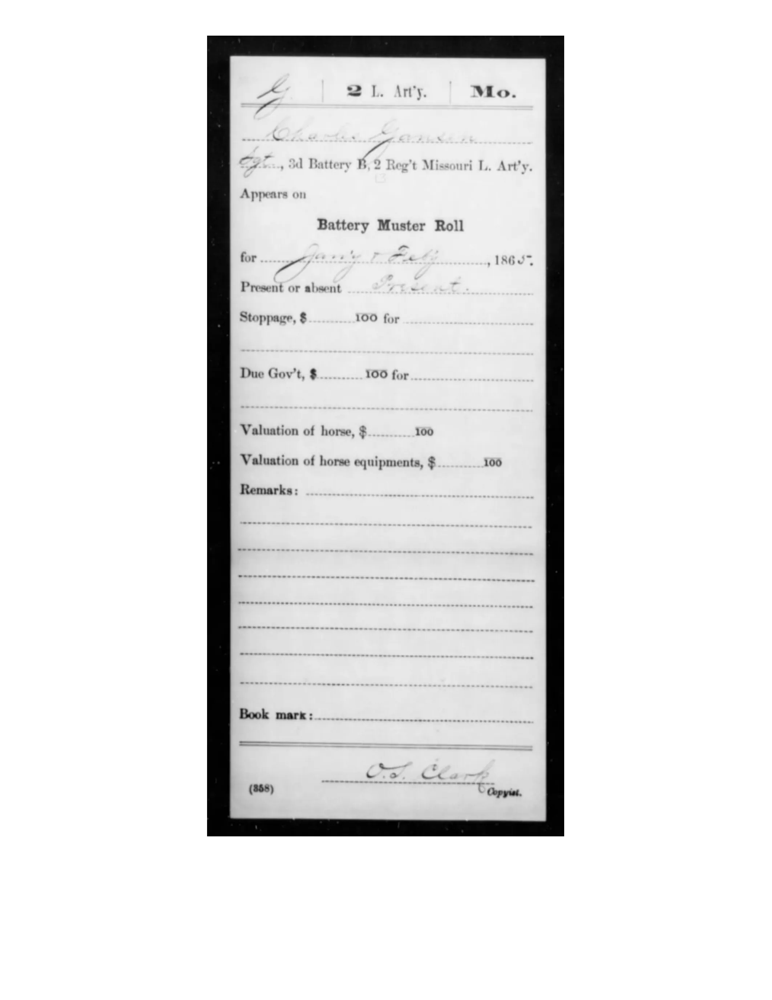
Page 10 — Battery Muster Roll, May & June 1864 MUSTER
- Soldier
- Charles Gannsen
- Period
- May & June, 1864
- Present or absent
- Present
- Remarks
- (blank)
- Copyist signature
- P. S. Clark
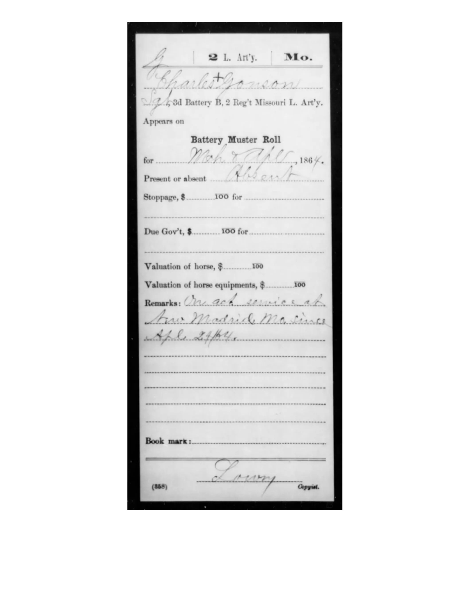
Page 11 — Battery Muster Roll, Mch & Apr 1864 MUSTER
- Soldier
- Charles Gannsen
- Period
- March & April, 1864
- Present or absent
- Absent
- Remarks
- "On det. service at New Madrid, Mo. since Apl. 24/64."
- Copyist signature
- Lacery
Documents Charles's detached assignment to New Madrid, Missouri starting 24 April 1864.
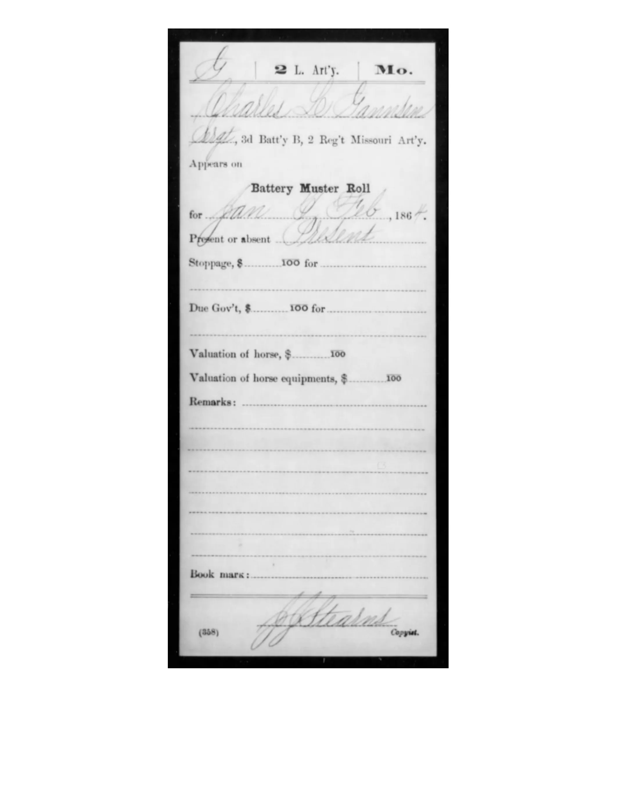
Page 12 — Battery Muster Roll, Jan & Feb 1864 MUSTER
- Soldier
- Charles Gannsen
- Period
- January & February, 1864
- Present or absent
- Present
- Remarks
- (blank)
- Copyist signature
- [J. J. C.] [illeg.]
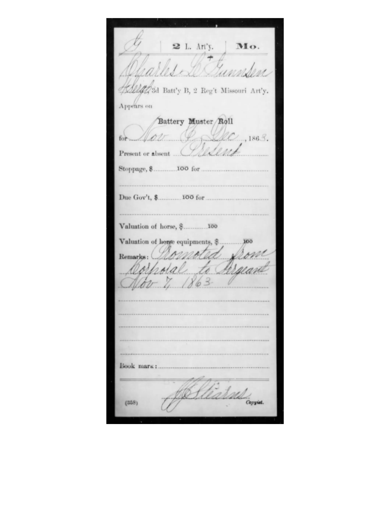
Page 13 — Battery Muster Roll, Nov & Dec 1863 MUSTER PROMOTION
- Soldier
- Charles Gannsen
- Period
- November & December, 1863
- Present or absent
- Present
- Remarks
- "Promoted from Corporal to Sergeant Nov. 7, 1863."
- Copyist signature
- [J. J. C.] [illeg.]
Key promotion event: Charles became a Sergeant on 7 November 1863 — a rank he held until reduction (per Gen. Order 28, captured on pages 2–4) sometime in 1864–65.
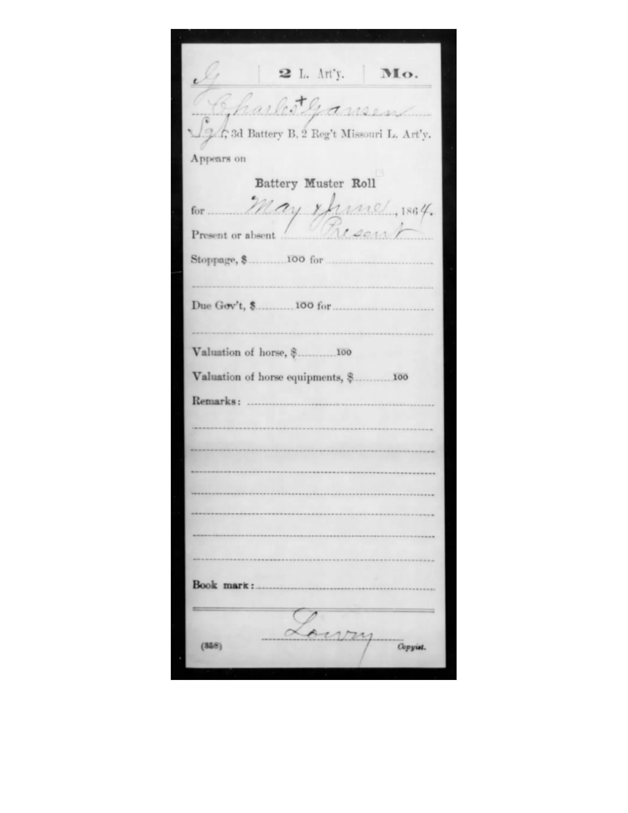
Page 14 — Battery Muster Roll, May & June 1864 (duplicate / parallel) MUSTER
- Soldier
- Charles Gannsen
- Period
- May & June, 1864
- Present or absent
- Absent
- Remarks
- (blank)
- Copyist signature
- Lacery
Parallel record covering the same period as page 10; the contradicting "Present" vs "Absent" likely reflects two separate source rolls (regimental and battery-level).
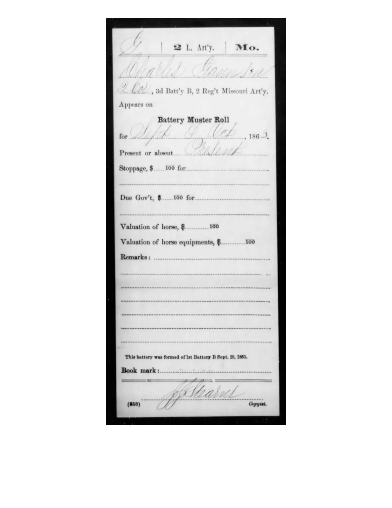
Page 15 — Battery Muster Roll, Sept & Oct 1863 MUSTER REORG
- Soldier
- Charles Gannsen
- Period
- September & October, 1863
- Present or absent
- Present
- Remarks
- (blank)
- Footnote
- "This battery was formed of 1st Battery B Sept. 20, 1863."
- Copyist signature
- [J. J. C.]
Records the unit reorganization: 3d Battery B was created out of 1st Battery B on 20 September 1863.
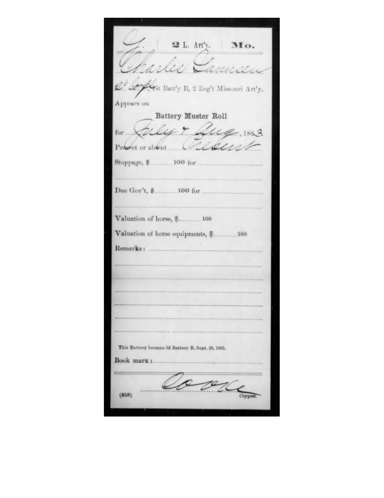
Page 16 — Battery Muster Roll, July & Aug 1863 MUSTER REORG
- Soldier
- Charles Gannsen
- Period
- July & August, 1863
- Present or absent
- Present
- Remarks
- (blank)
- Footnote
- "This battery became 3d Battery B Sept. 20, 1863."
- Copyist signature
- Goose (or similar)
Mirror image of page 15 from the original-unit side: 1st Battery B → 3d Battery B reorganization.
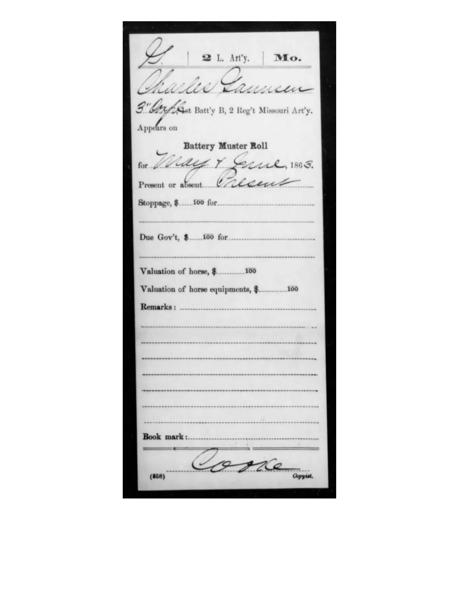
Page 17 — Battery Muster Roll, May & June 1863 MUSTER
- Soldier
- Charles Gannsen
- Period
- May & June, 1863
- Present or absent
- Present
- Remarks
- (blank)
- Copyist signature
- Goose
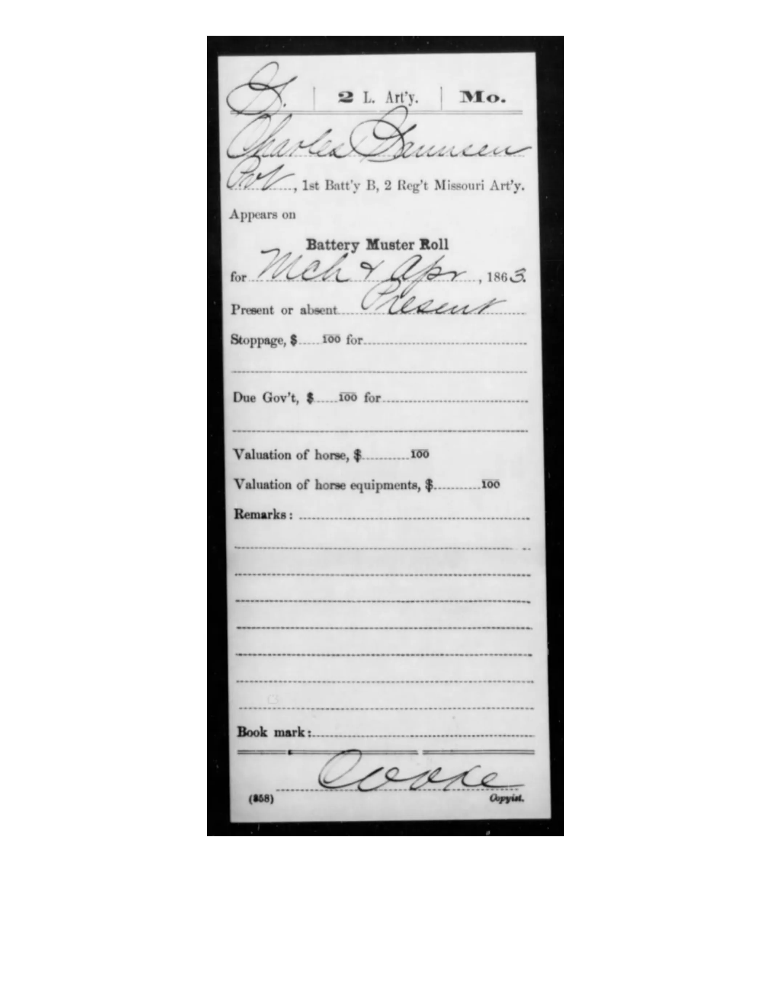
Page 18 — Battery Muster Roll, Mch & Apr 1863 MUSTER
- Soldier
- Charles Gannsen
- Period
- March & April, 1863
- Present or absent
- Present
- Remarks
- (blank)
- Copyist signature
- Goose (or similar)
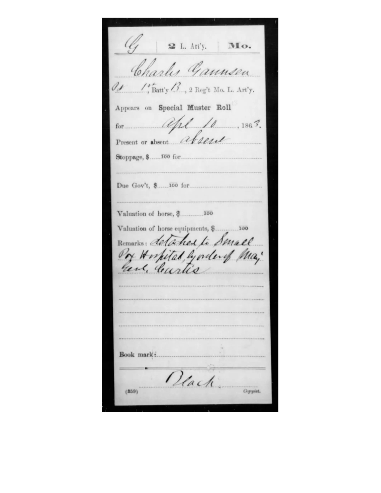
Page 19 — Special Muster Roll, 10 April 1863 SPECIAL
- Soldier
- Charles Gannsen
- Roll type
- Special Muster Roll
- Date
- April 10, 1863
- Present or absent
- Absent
- Remarks
- "Detached to Small Pox Hospital by order of Maj. Gen. Curtis."
- Copyist signature
- Black
Documents Charles's smallpox-hospital detail by personal order of Maj. Gen. Samuel R. Curtis, commander of the Department of the Missouri.
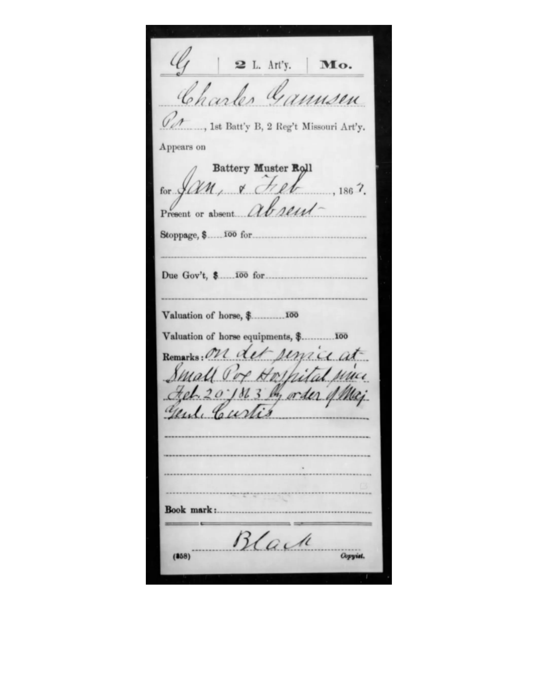
Page 20 — Battery Muster Roll, Jan & Feb 1863 MUSTER SMALLPOX
- Soldier
- Charles Gannsen
- Period
- January & February, 1863
- Present or absent
- Absent
- Remarks
- "On det service at Small Pox Hospital since Feb. 20, 1863, by order of Maj. Gen. Curtis."
- Copyist signature
- Black
Confirms the smallpox-detail start date: 20 February 1863.
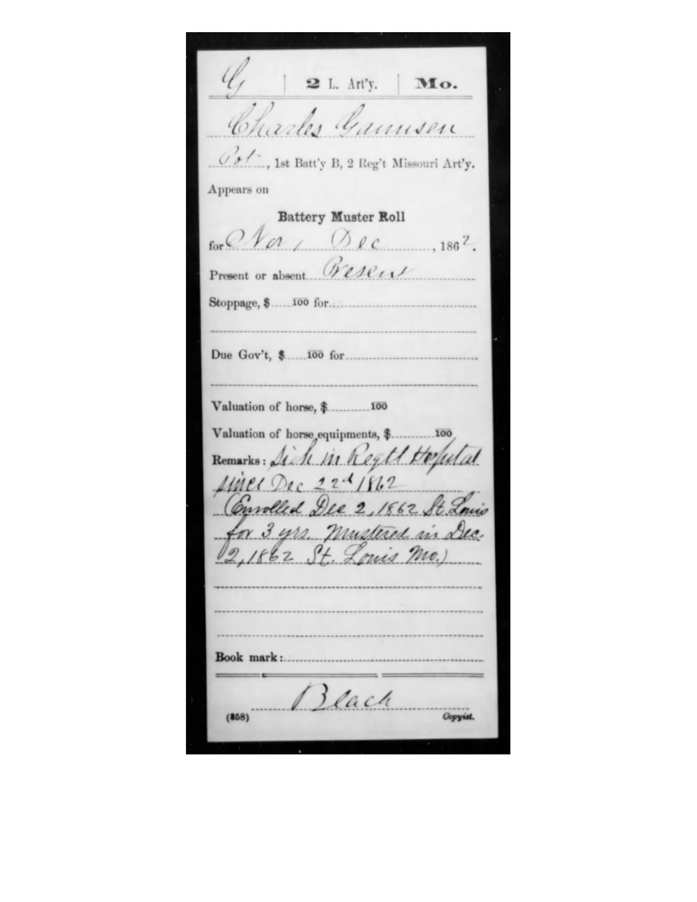
Page 21 — Battery Muster Roll, Nov & Dec 1862 MUSTER ENLISTMENT
- Soldier
- Charles Gannsen
- Period
- November & December, 1862
- Present or absent
- Present
- Remarks
- "Sick in hospital since Dec 22, 1862. (Enrolled Dec 2, 1862, St. Louis, Mo. for 3 yrs. Mustered in Dec 02, 1862, St. Louis, Mo.)"
- Copyist signature
- Black
The chronological start of Charles's service: enrolled and mustered in on 2 December 1862 at St. Louis, MO, for a 3-year term; reported sick in hospital from 22 Dec 1862. This is the earliest US-government dated record of Charles Gannsen.
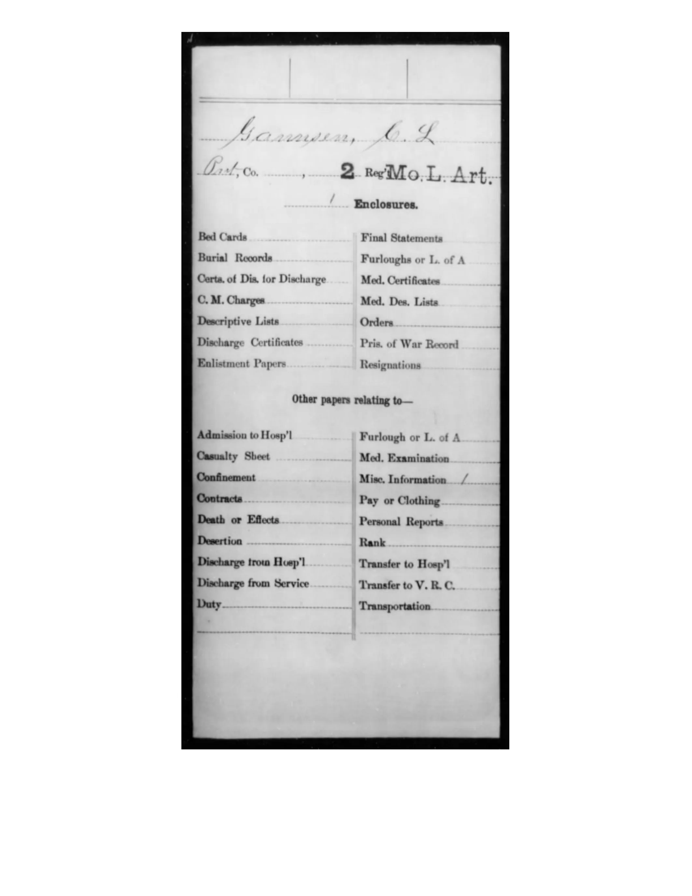
Page 22 — Enclosures Card INDEX
- Soldier
- Gannsen, C. D.
- Unit
- 2 Reg M. L. Art. (2nd Regiment Missouri Light Artillery)
- Enclosures (left column, all unchecked)
- Bed Cards · Burial Records · Cert. of Dis. for Discharge · C. M. Charges · Descriptive Lists · Discharge Certificates · Enlistment Papers · Final Statements · Furloughs or L. of A · Med. Certificates · Med. Des. Lists · Orders · Pris. of War Record · Resignations
- Other papers relating to (right column)
- Admission to Hosp'l · Casualty Sheet · Confinement · Contracts · Death or Effects · Desertion · Discharge from Hosp'l · Discharge from Service · Duty · Furlough or L. of A · Med. Examination · Misc. Information ✓ · Pay or Clothing · Personal Reports · Rank · Transfer to Hosp'l · Transfer to V. R. C. · Transportation
Tells us what's in Charles's NARA file beyond the muster cards: the only checked box is "Misc. Information," which corresponds to the Special Order on page 24. Note also: this card preserves the middle initial "C. D. Gannsen."
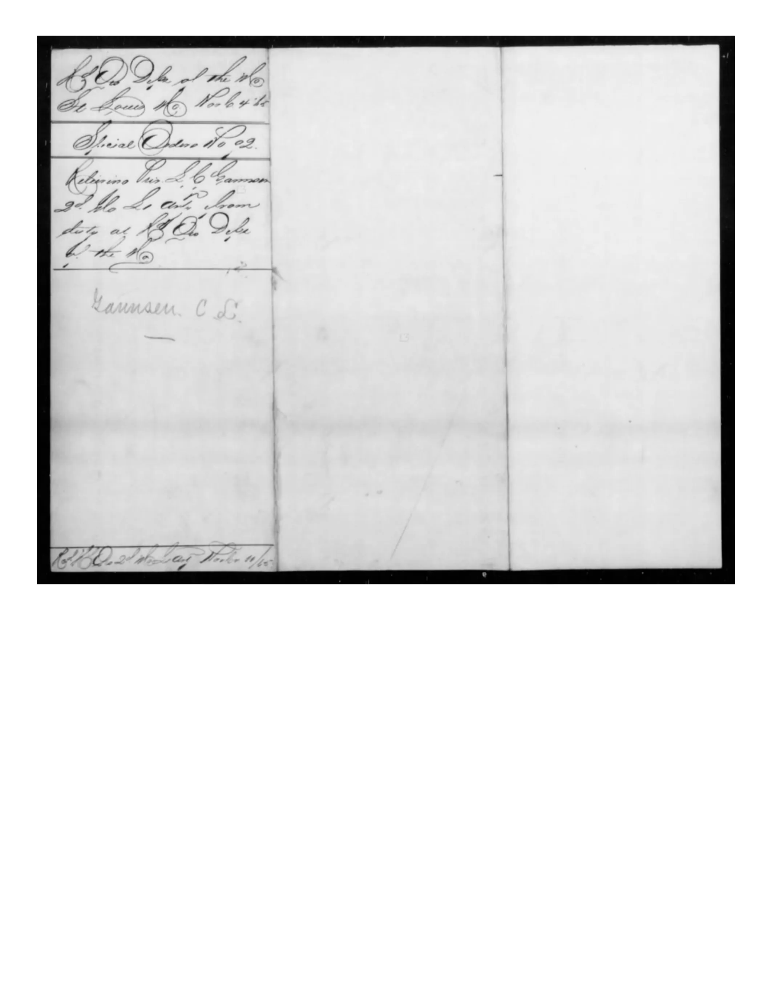
Page 23 — Manuscript Fragment FRAGMENT
- Visible content
- "H. Q. Dpts of the Mo. / St. Louis Mo. June[?] 12, '65 / Special Order No 92 / Relieving Pvt. C. Gannsen of the 2nd Mo. L. Arty / duty as A.A.G. [?] / Date as H.Q. Dpts of the Mo. / Gannsen, C. D."
Looks like the routing/endorsement slip that travelled with the Special Order on the next page (page 24). Cross-references the same date (12 June 1865), the same order number (92), and the same name format ("C. D. Gannsen").
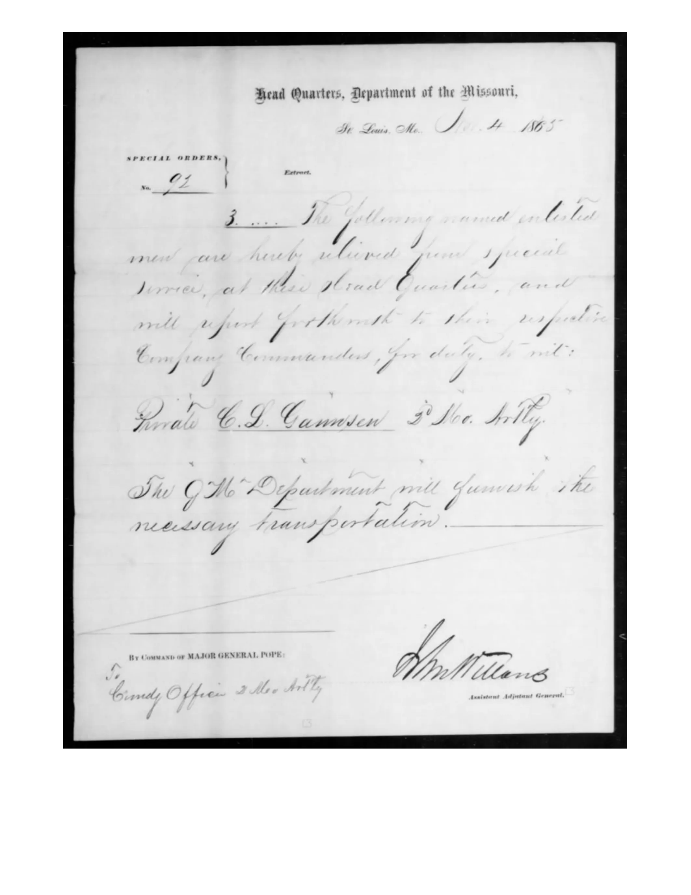
Page 24 — Special Order No. 92, Department of the Missouri, 12 June 1865 SPECIAL ORDER
- Header
- Head Quarters, Department of the Missouri
St. Louis, Mo., June 12, 1865
SPECIAL ORDERS, No. 92 — Extract - Body
- "3 ___ The following named enlisted men are hereby relieved from special service at these Head Quarters, and will report forthwith to their respective Company Commanders for duty, to wit: Private C. D. Gannsen, 2 Mo. Arty. The Q. M. Department will furnish the necessary transportation."
- Issued by
- By Command of Major General Pope (Maj. Gen. John Pope, then commanding Dept. of the Missouri)
- Signed
- Sm. [Samuel] Williams, Assistant Adjutant General
- Endorsement / file
- "Lindell Office, 2 Mo. Arty" (or similar — refers to the regimental office at the Lindell Hotel/Barracks complex in St. Louis)
The only non-card document in the packet — and arguably the most historically rich. Pope's order returns Pvt. Gannsen from special HQ duty back to his battery. The transcription of "C. D." (rather than "Charles") is consistent with the index card on page 22 and the endorsement on page 23.
Reading discrepancy (flagged June 2026): this Fold3 scan is transcribed here as S.O. No. 92, 12 June 1865, signed Sm. Williams, naming "C. D. Gannsen." The cleaner NARA mail-order scan (PG 04) of what appears to be the same order reads it as 4 November 1865, signed J. W. Williams, naming "C. L. Gannsen." The date and signer-initials are therefore contested between the two scans and unresolved; both are recorded pending a side-by-side image re-read. (Either way, the order only relieves Charles from special/detached service — it is not the source of his rank reduction, which is independently dated 15 March 1865 by G.O. No. 82.)
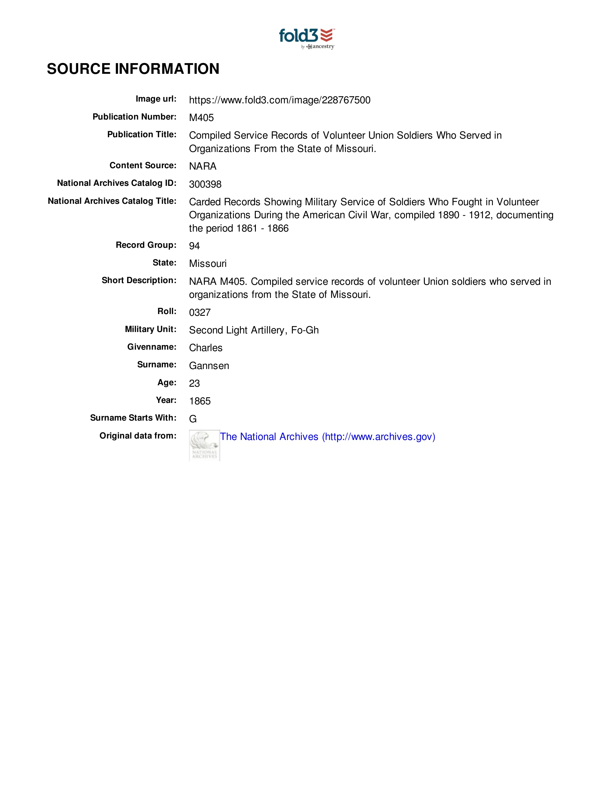
Page 25 — Fold3 Source Information Cover COVER
- Image URL
- https://www.fold3.com/image/228767500
- Publication number
- M405
- Publication title
- Compiled Service Records of Volunteer Union Soldiers Who Served in Organizations From the State of Missouri
- Content source
- NARA
- National Archives Catalog ID
- 300398
- Catalog title
- Carded Records Showing Military Service of Soldiers Who Fought in Volunteer Organizations During the American Civil War, compiled 1890–1912, documenting the period 1861–1866
- Record group
- 94
- State
- Missouri
- Roll
- 0327
- Military unit
- Second Light Artillery, Fo–Gh
- Given name / Surname
- Charles / Gannsen
- Age / Year
- 23 / 1865
- Original data from
- The National Archives (archives.gov)